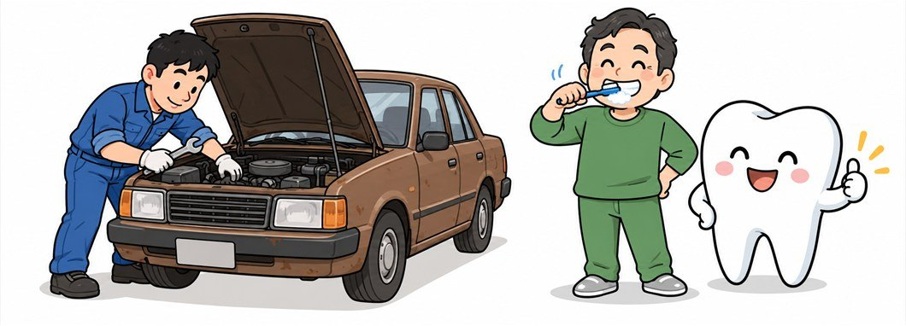
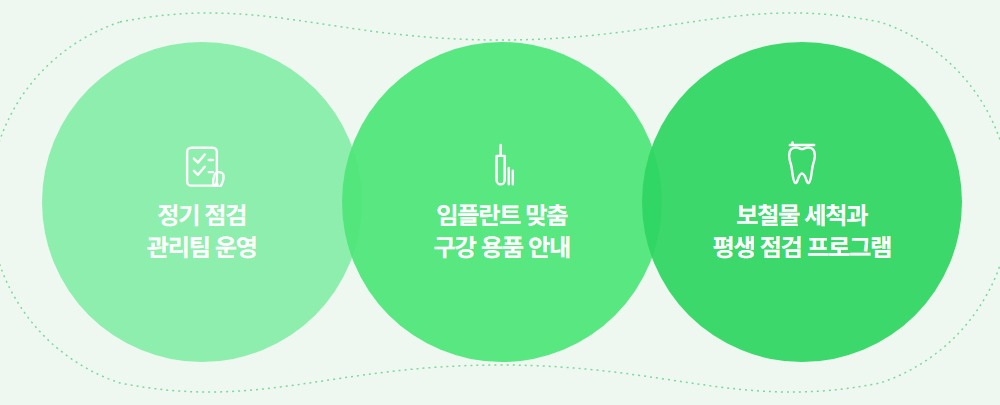
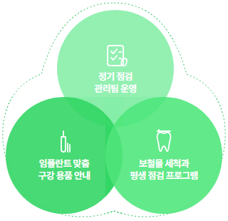
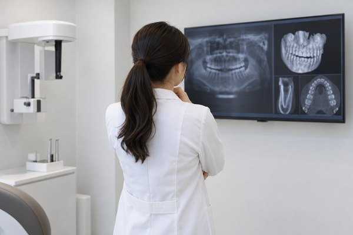
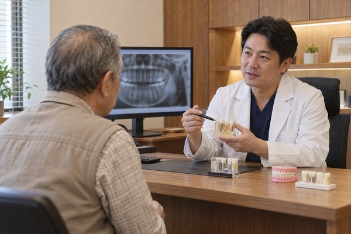
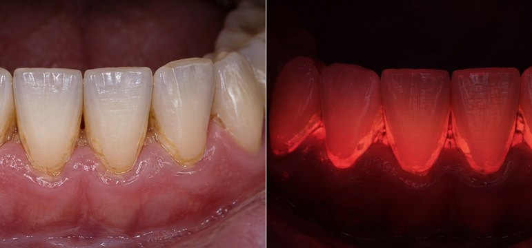
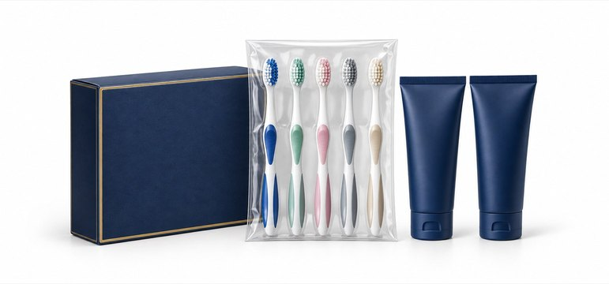
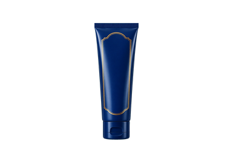
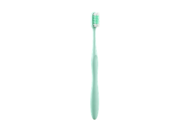

어르신 진료 장기 점검 과정
임플란트 진료 뒤 점검만을 위해
전체 치과 공간 가운데
예방관리실을 따로 마련한 까닭은 무엇일까요?
온담길치과가 별도의 예방관리 공간을 마련한 까닭은
치과 질환과 임플란트는 한 번의 진료로 끝나지 않고 정기적인 점검을 받아야 오래
불편 없이 사용할 가능성을 높일 수 있기 때문입니다.
온담길 정기관리 과정은 치아와 잇몸의 변화를 일찍 찾고 임플란트 시술과 보철 장착 뒤
검사 기록을 이어 보며 현재의 입안 상태를 관리하도록 돕습니다.
보철을 장착한 날부터 생활 관리가 이어집니다.
꾸준한
온담길 시니어케어 평생 관리 프로그램
자동차를 일정한 주기로 점검하고
닳은 부품을 바꿔 주듯
고정체와 보철 역시 꾸준히 상태를 확인해야 합니다.
정기 구강관리 과정에서는
사용하고 있는 임플란트의 잇몸과 맞물림을 확인해
사용 기간을 늘리고 불편을 줄이며
오래 쓰도록 예방관리 담당자와
관리 일정 기록을 바탕으로 방문 시기를 놓치지 않도록
개인별 기록을 바탕으로 정기 점검을 이어갑니다.

차량을 정기 점검하듯 꾸준한 점검이 필요한 임플란트
차량을 정기 점검하듯
꾸준한 점검이 필요한 임플란트
개인 상태에 맞춘 장기 점검 체계


온담길 시니어케어 평생 관리
정기관리 과정
-
단계 1

세부 구강 촬영방사선 사진과 CT 등 필요한 검사를 이용해 이전에 진료한
임플란트와 남은 치아, 잇몸 상태를 함께 살핍니다. -
단계 2
페리오 스파 담당자 관리예방관리 담당자가 온담길 정기관리실에서
치석 제거와 잇몸 상태 확인, 임플란트 주변 세정을 필요한 범위에서 진행합니다. -
단계 3
담당자 진단 및 평가지금 잘 관리되는 부분과 바꿔야 할 습관,
집에서 지켜야 할 내용을 구체적으로 설명합니다. -
단계 4

다음 방문 시기와 검사 항목 결정개인의 치아와 잇몸 상태를 기준으로 다음 점검 시기와 검사 항목을 정합니다.
예방관리 담당자가 칫솔질 습관과 위생 상태를 살피고
보철과 잇몸을 닦는 방법을
함께 실습하며 알려 드립니다.
-
고정체와 보철을 사용하는 분에게 필요한 칫솔 사용 실습
임플란트나 보철을 장착한 뒤에는 칫솔질 방법을
보철 형태에 맞게 바꾸어야 합니다.
내원하신 분마다
치과에서 받는 관리와 함께
집에서 이어갈 관리법도
직접 연습해 보시도록 해
지금의 치아와 잇몸 상태를 오래 지키도록 돕습니다. -
정기 검사 시 현재 칫솔질 습관 확인
개인별로 정한 주기에 맞춰 정기 점검을 받을 때에는
지금의 위생 상태와 보완할 관리 방법을
살펴본 뒤
놓치기 쉬운 부위를 다시 알려드리고,
평소 생활에서 실천할 수 있도록 구체적으로 알려드립니다.
-

어르신의 입마름과 잇몸 상태를 반영해
온담길치과가 진료실에서 써 보고 고른 구강관리 용품어르신의 입마름과 잇몸 상태를 반영한
온담길치과가 진료실 사용성을 살펴 고른 구강관리 용품
내 입안 상태에 맞는 관리용품 사용 안내
치아와 보철, 잇몸 상태에 알맞은 관리용품 사용법을 설명합니다.
관리용품 선택은 올바른 칫솔질을 돕고 치료 뒤의 상태를 지키며,
남아 있는 자연치아를 더 오래 쓰기 위한 생활 관리의 한 부분입니다.
-
01닥터온담길 시니어케어 치약

관리용품 보기염화나트륨 성분을 활용해
임플란트 주변 위생관리에 사용잇몸을 자극하지 않도록 성분과 사용량을 확인
-
02닥터온담길 시니어케어 칫솔

관리용품 보기담당자가 설계한
임플란트 개인별
보철 관리용 칫솔보철 아래쪽을 닦기 편한 칫솔모 형태
-
03저자극 구강 세정액
관리용품 보기계면활성제와 알코올을 줄여 입마름이 있는 분도
편하게 쓰는 저자극 구강 세정액키토산과 녹차 추출 성분을 활용해
입 냄새 관리에 활용 -
04부드러운 거품 치약
 관리용품 보기
관리용품 보기연마 성분을 넣지 않아 부드럽게 닦는 구강관리
고운 거품이 혀 표면과 치아 사이에 퍼져
치아와 잇몸 경계까지 거품이 닿도록
문을 열고 닫는 치과가 많은 환경
속에서도
지역에서 오랜 기간 진료 기록을 이어 온
온담길치과가
내원하신 분의 장기 주치의로
오래 함께하겠습니다.